A modern Android productivity application bringing notes, tasks, schedules, and notifications together in one organized ecosystem. Engineered offline-first with Jetpack Compose, Room, and a scalable TypeScript serverless sync engine.
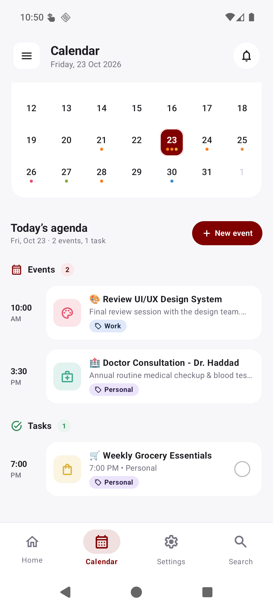
Engineered to eliminate productivity fragmentation by unifying notes, structured checklists, agenda timelines, and alarm-level notifications into a cohesive, private, offline-first system.
Modern mobile productivity is plagued by fragmentation: users maintain one app for free-form thoughts, a second for to-do checklists, a third for calendar scheduling, and a separate system clock for alarms. This context switching causes missed deadlines, dispersed knowledge, and cognitive overload.
Notas was engineered from the ground up to solve this through unified domain modeling. A single entity in Notas can serve as rich Markdown documentation, contain nested checkable subtasks, schedule an exact AlarmManager reminder, and appear on the interactive yearly calendar—all without duplicating records or jumping between disjointed interfaces.
Each feature in Notas is designed to remove friction, preserve user agency, and provide complete data ownership without sacrificing modern aesthetics.
Rich-text styling, color badges, and contextual shoulders. Features smooth, physics-based swipe gestures for instant pinning, archiving, and deletion with zero network delay.
Complete custom-built 12-month overview displaying full year grids with responsive 2-column layouts, distinguished weekend styling, active day highlights, and an anchored floating Today navigation bar.
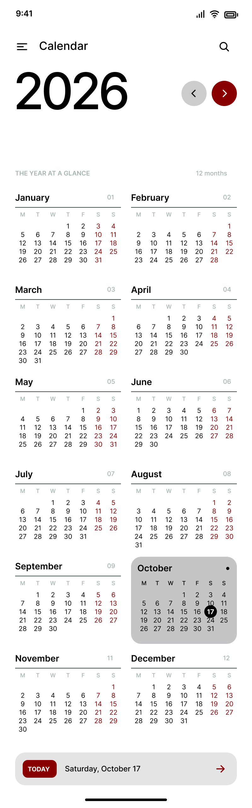
Click to enlargeHierarchical checklist architecture supporting parent-child subtasks. Checking all child tasks automatically marks the parent done, with drag-and-drop reordering and distinct active vs. done grouping.
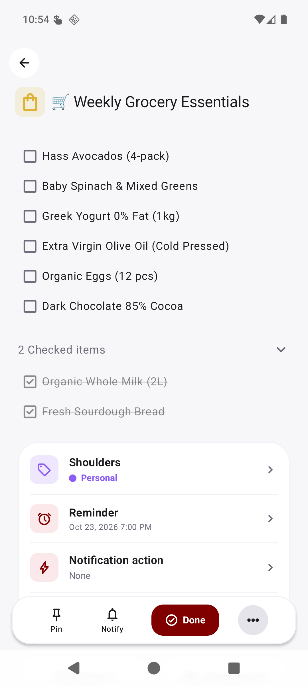
Click to enlargeIncremental delta synchronization using Hybrid Logical Clocks (HLC) and revision watermarks over Vercel Serverless and PostgreSQL, plus deterministic in-memory ZIP backups with S3/R2 cloud storage.
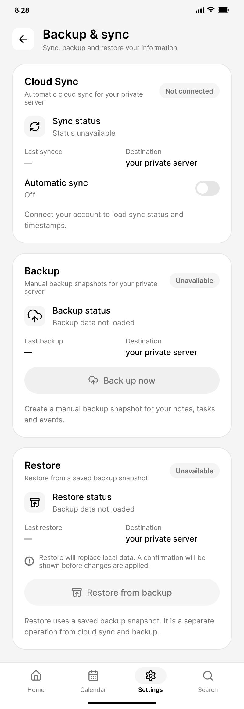
Click to enlargeAutonomous background intelligence that analyzes notes, extracts actionable to-dos, synthesizes structured checklists from messy thoughts, and provides smart summaries. Currently in active beta testing.
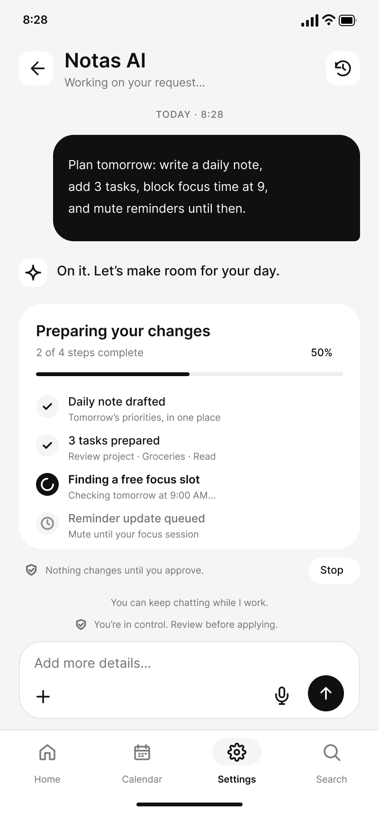
Click to enlargeEngineered dark theme with calibrated charcoal surfaces (#242424, #262626, #3A3A3A), pure OLED black option, and 6 vibrant mode-adaptive accent palettes with live in-app preview.
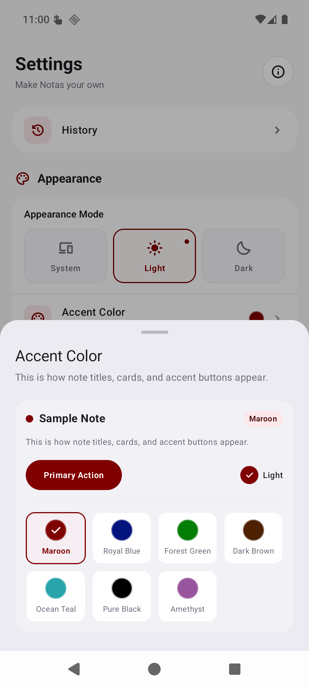
Click to enlargeNotas relies on battle-tested frameworks across the native mobile client and serverless cloud backend, adhering to clean architecture principles.
A clean separation of concerns separating native presentation from domain rules and cloud synchronization, ensuring deterministic behavior under intermittent connectivity.
Built 100% in Jetpack Compose following MVI / MVVM and Unidirectional Data Flow (UDF). ViewModels expose immutable StateFlow to composables while UI events flow backwards through type-safe sealed interfaces. Implements custom theme tokens, window insets, and adaptive layouts for phones, foldables, and tablets.
UI components never mutate state directly. User interactions emit sealed UiEvent objects to the ViewModel. The ViewModel interacts with domain use cases, writes to the Room repository, and Room emits new reactive database snapshots into StateFlow, automatically recomposing only the affected Compose nodes.
To enable concurrent offline modifications across multiple devices without data loss, Notas uses an append-only change journal paired with Hybrid Logical Clocks. When online, pending delta changes are pushed to Vercel in atomic transactions. The backend compares field revision watermarks, merges non-conflicting field updates, and returns server deltas.
Full backups export complete application data as a portable ZIP archive containing notes.json, settings.json, and embedded media under media/<noteId>/. The backup serializer resolves private content:// URIs into portable relative entries (REL:media/...), allowing painless transfer across devices and platforms.
When a note is locked, its contents are encrypted using a 256-bit AES master key stored in the device's hardware Secure Element / StrongBox. Decryption keys never touch disk. Biometric authentication (Class 3 BiometricPrompt) or PIN entry triggers cryptographic cipher initialization in memory with automatic zeroization upon screen lock.
From architectural prototype to a dual-flavor production codebase: a transparent record of development milestones and engineering iterations.
Analyzed workflows across Google Keep, Notion, and TickTick. Identified that separating notes, tasks, and calendar events causes cognitive friction. Architected a unified SQLite schema in Room capable of modeling notes, hierarchical checklists, and scheduled events in a cohesive relational database.
Created an editorial-grade dark interface rejecting generic bright grey surfaces. Standardized on a unified dark hierarchy (#242424 base, #262626 cards, #3A3A3A dividers) with 6 dynamic theme accents, custom squircle shapes, and accessible typography with device font-scaling caps.
Implemented custom Compose VisualTransformation for live Markdown formatting. Engineered a hierarchical checklist DAG with parent-child check bubbling, and integrated Android AlarmManager.setExactAndAllowWhileIdle() for guaranteed notification delivery.
Redesigned the Calendar screen from scratch: built an interactive 12-month overview with responsive 2-column monthly grids, prominent 58sp year typography, paired previous/next controls, highlighted weekends, and an anchored floating Today navigation bar.
Developed a serverless REST backend on Vercel Node.js. Authored Prisma schemas mirroring Room entities with 100% parity. Implemented incremental delta sync protocols, Firebase Admin token authentication, rate limiting, and S3-compatible private backup storage.
Decoupled the codebase into two specialized flavors: an Offline Master flavor completely stripped of Google Play Services, Firebase SDKs, and INTERNET permissions for ultimate privacy; and an Online Flavor with full cloud delta sync. Enforced via custom Gradle hygiene verification tasks.
Real problems encountered during the development of Notas, the engineering approaches evaluated, the implementations deployed, and the verified results.
PendingChangeEntity. The Vercel TypeScript API executes atomic Prisma transactions that merge incoming field modifications against server snapshots, only bumping revision for fields that actually changed.
WorkManager or AlarmManager timers by up to 45 minutes, causing missed critical reminders and alarms.
AlarmManager.setExactAndAllowWhileIdle() targeting ReminderReceiver. If marked Critical, fires an alarm audio stream and schedules an ongoing 15-minute repeat cycle that cannot be dismissed by simply swiping the notification away.
offline and playstore/github. Inverted dependencies using Dagger Hilt interface bindings so the offline flavor compiles with zero Firebase or Play Services libraries.
verifyOfflineFlavorHygiene. The task automatically parses the merged AndroidManifest.xml of the offline APK and fails the build if android.permission.INTERNET or any proprietary analytics class is present.
CalendarYearComponents.kt with custom rememberYearMonths(year) caching, isolated recomposition scopes per month card, and pure draw modifiers for weekend text colors and selected day circles.
Authentic application screenshots captured from live emulator and physical test devices. Click any interface to inspect full-resolution details and technical context.
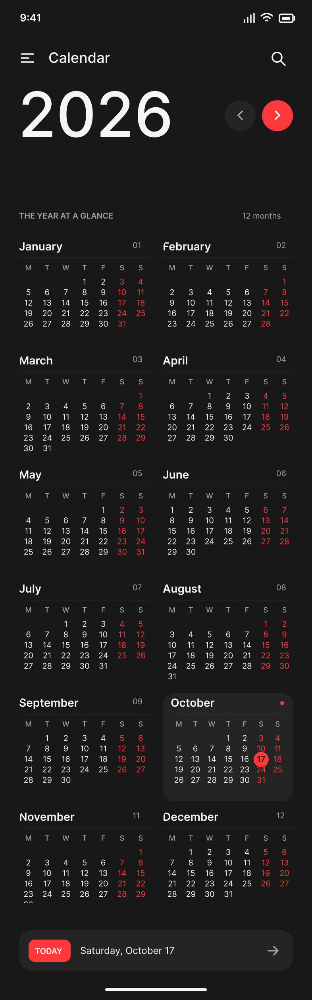
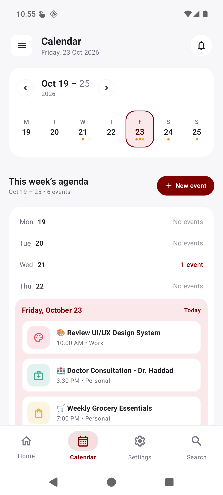
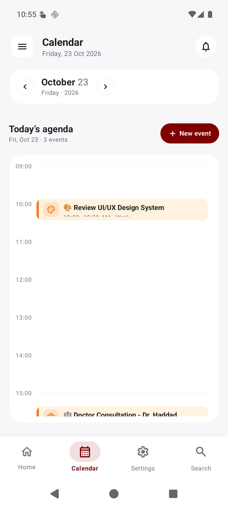
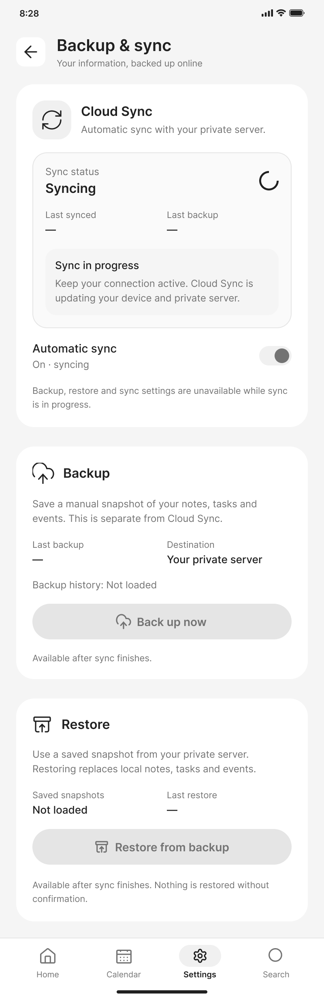
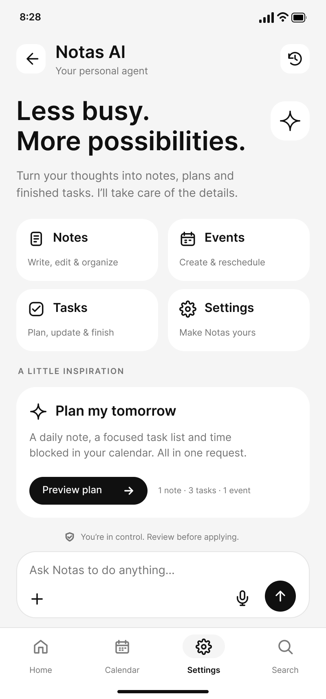
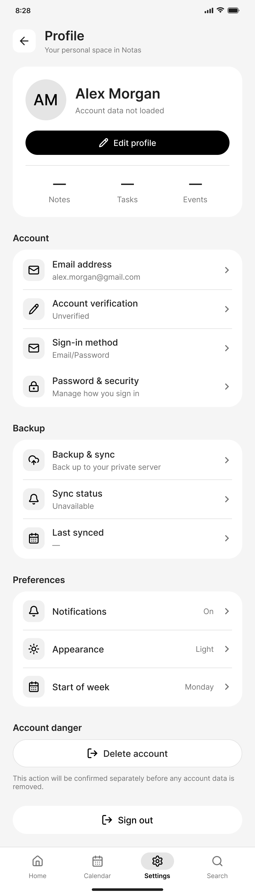
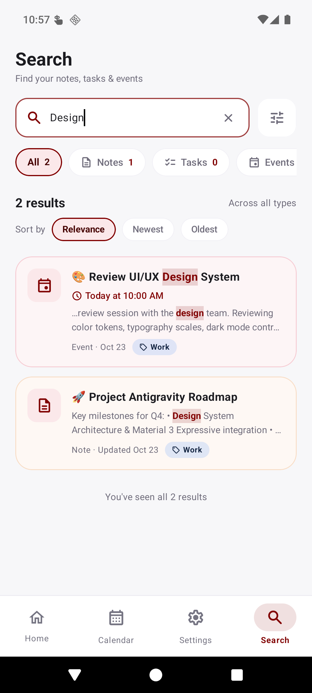
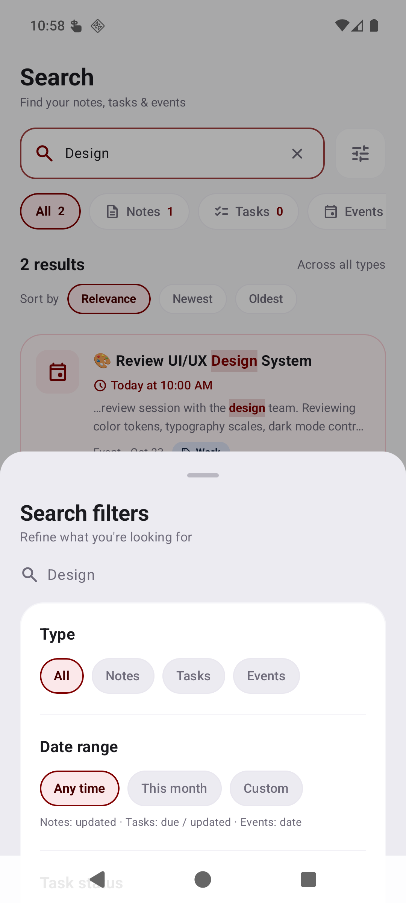
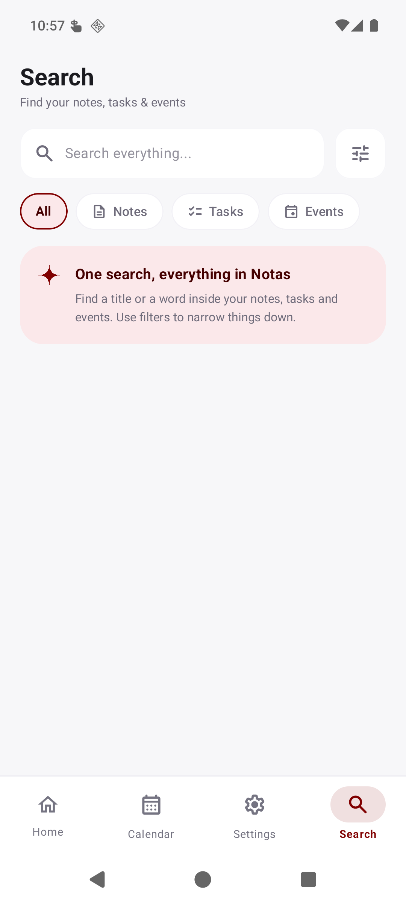
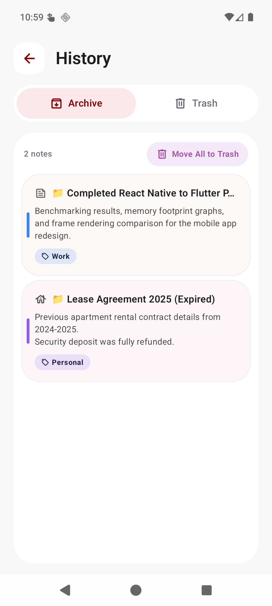
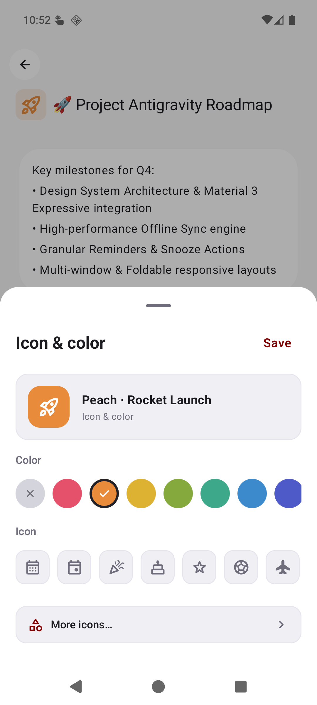
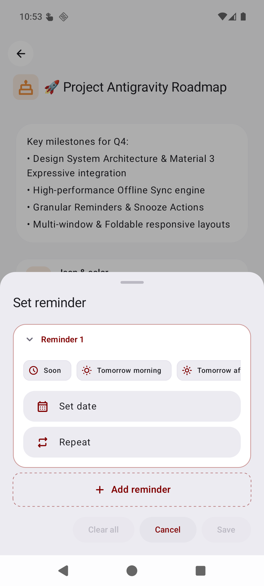
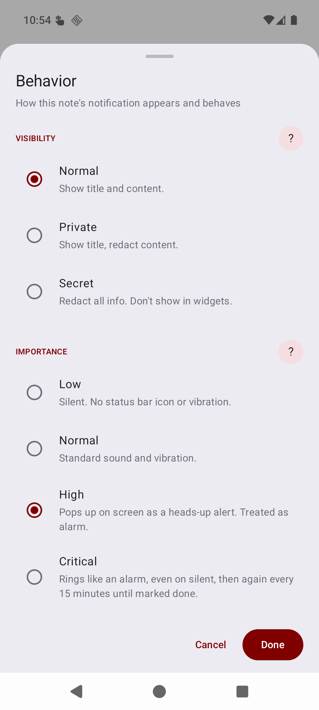
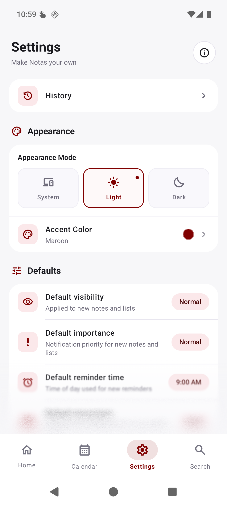
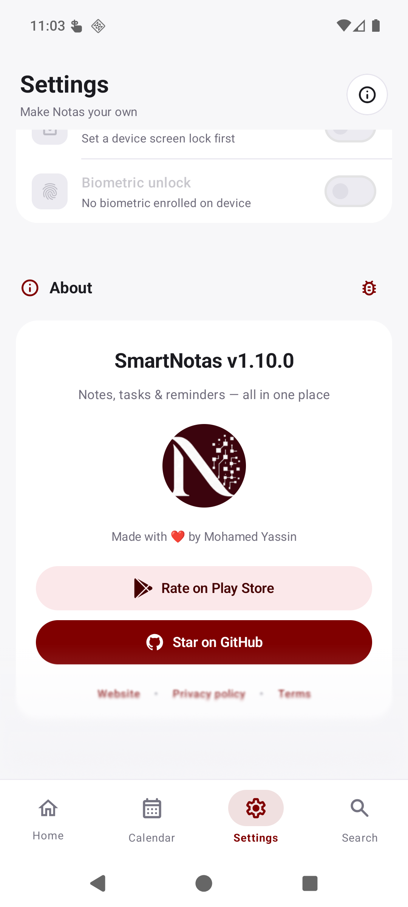
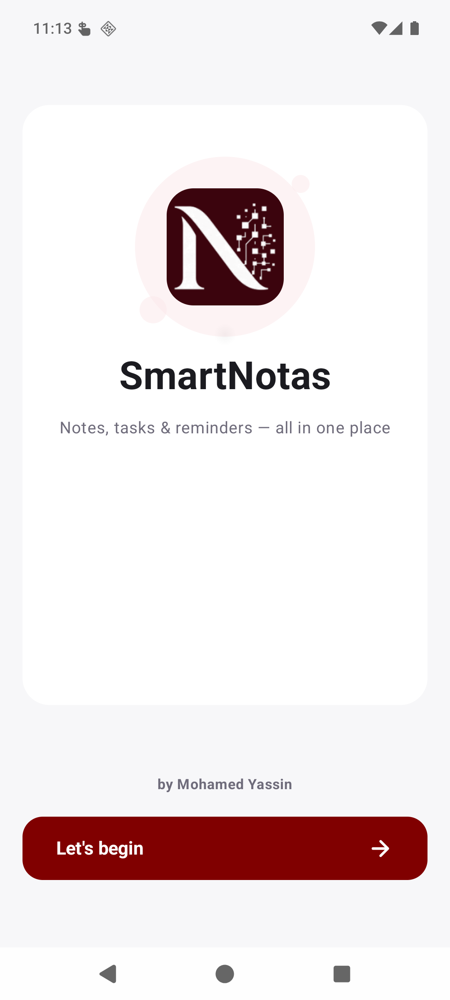
A software engineer specializing in native Android engineering with Jetpack Compose, scalable cloud architectures with TypeScript & PostgreSQL, and craft-driven interfaces.
Passionate about building software that respects user privacy, eliminates latency through offline-first design, and pairs robust computer science fundamentals with high-end aesthetic craft. Notas represents the culmination of deep exploration across mobile systems programming, clean architecture, and distributed synchronization.
Notas demonstrates how thoughtful architectural decisions, offline-first data modeling, and relentless UI polish can transform daily productivity software.